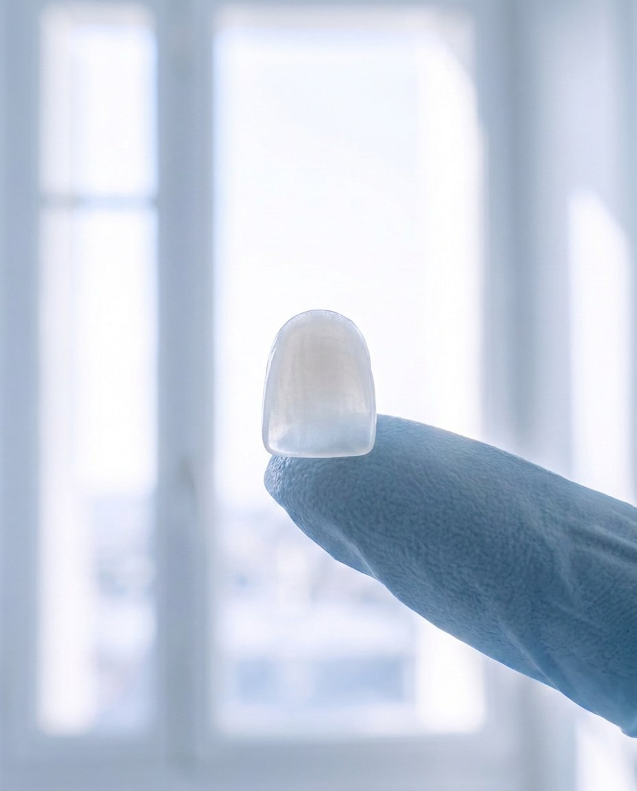

Veneers
Porcelain shells thinner than a contact lens, shaped against your face and shaded tooth by tooth. Chips, gaps and stains go, and your smile stays recognisably yours.
Ask about veneers- 3
- visits
- 3
- weeks, start to finish
- €1,200
- from, per tooth
